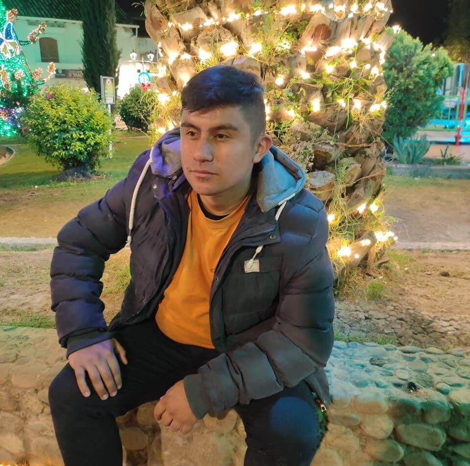

J. Alexis Sanchez | WDD 130

Hi, I'm Alexis. I'm currently focused on software development, especially in C#. I'm passionate about the logic behind financial systems and process optimization.

Hi, I'm Alexis. I'm currently focused on software development, especially in C#. I'm passionate about the logic behind financial systems and process optimization.